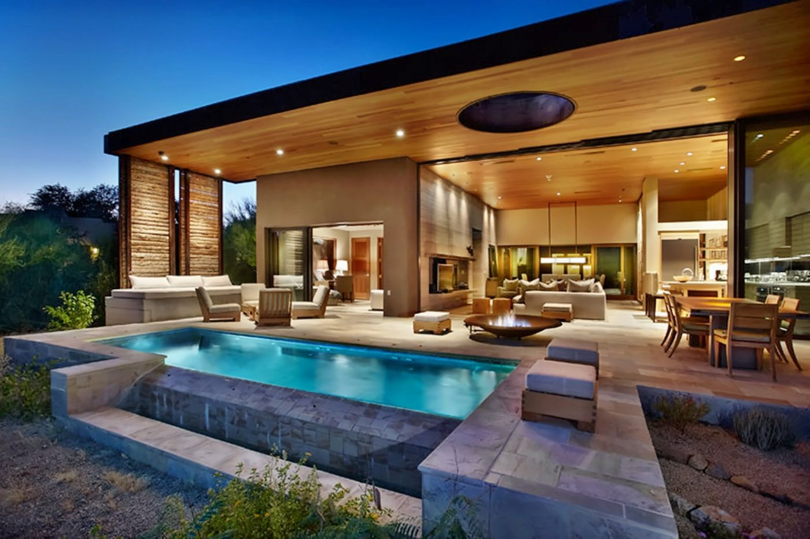
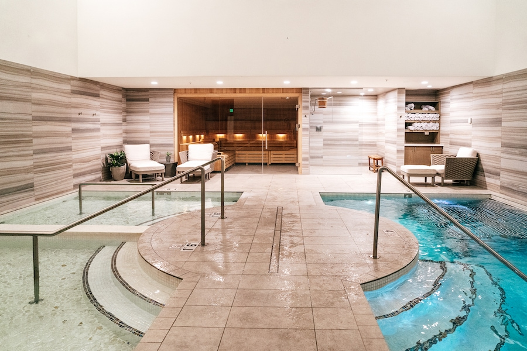
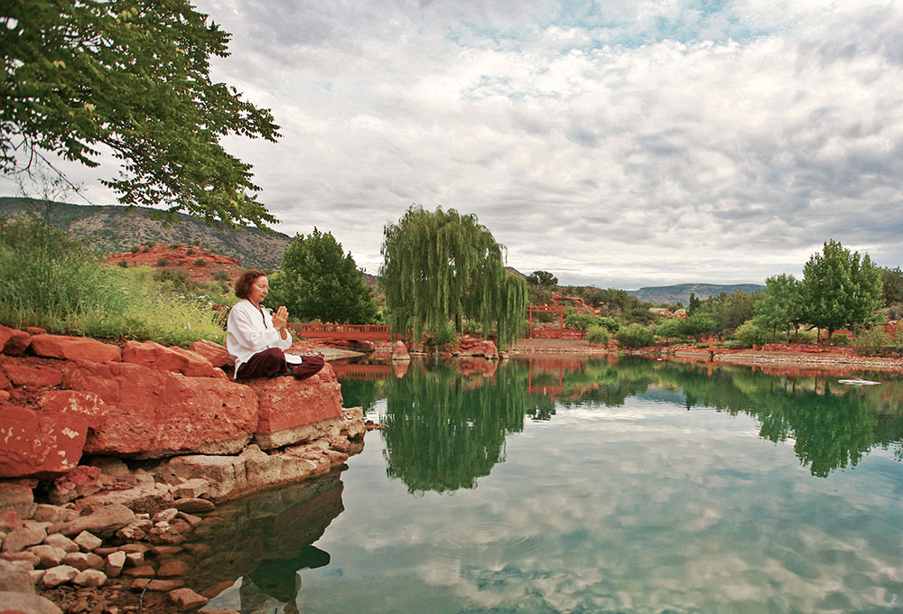
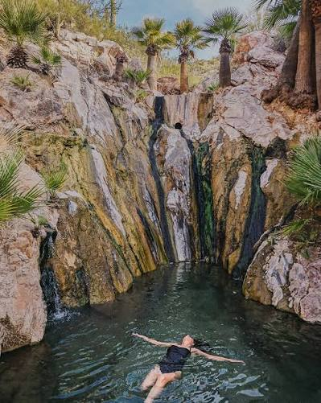
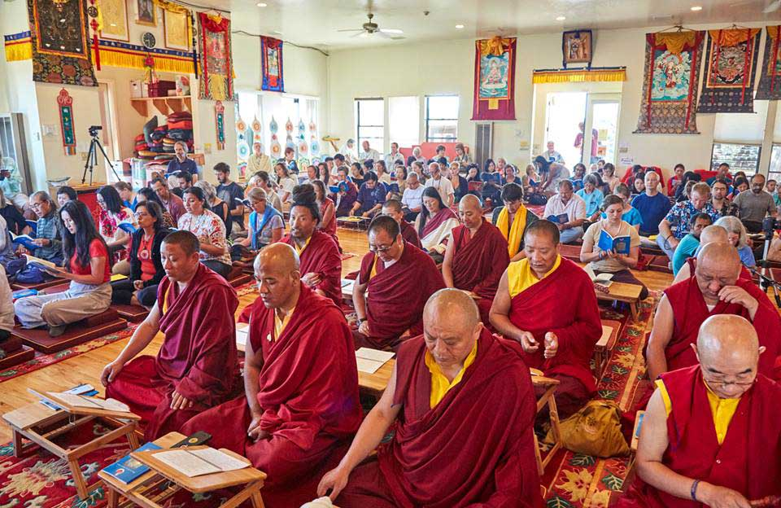
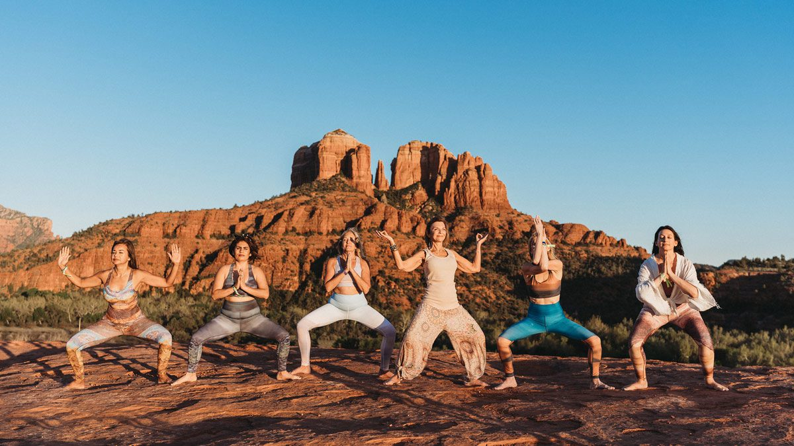
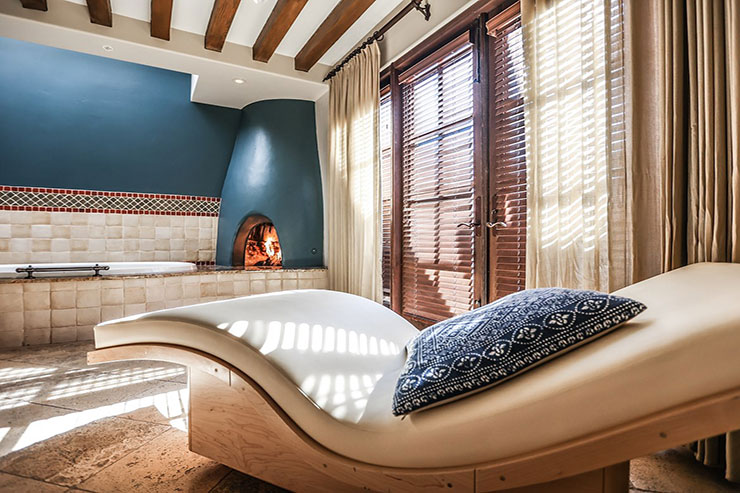
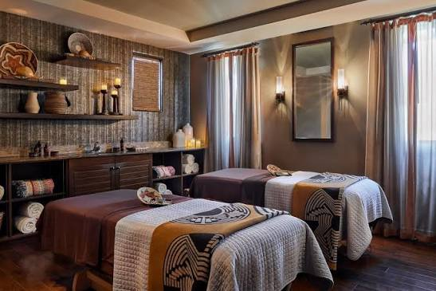
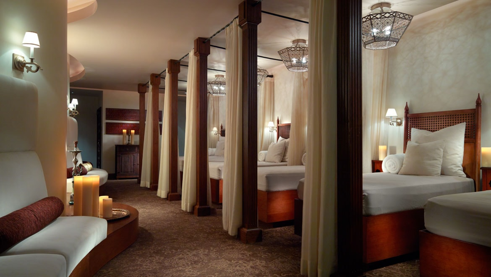

~2 hr💆

Miraval Arizona
The marquee one, the Southwest's Kripalu. All-inclusive mindful resort in the Tucson foothills: meditation, equine sessions, a challenge course, and no clocks. The full splurge reset.
TucsonVisit →

Multi-day immersions in the red rocks, real meditation centers, and quick local day spas for when you just need a few hours.
From an hour up the road to the red rocks. Day spas to multi-day programs. Best in the cooler months.

The marquee one, the Southwest's Kripalu. All-inclusive mindful resort in the Tucson foothills: meditation, equine sessions, a challenge course, and no clocks. The full splurge reset.

The accessible one, just north in Carefree and named Arizona's best wellness resort in 2025. Daily meditation, sound baths, ecstatic dance, and hikes, without the Miraval price tag.

Nonprofit retreat on red-rock acreage, rooted in Korean Sun Tao practice. Meditation weekends up to longer immersions, the closest thing out here to a true Kripalu-style program center.

Three natural hot springs an hour from home, reborn as a luxury escape. Daily yoga and meditation, stargazing by the fire, farm-to-table meals. Books out far ahead, plan early.

The real-deal meditation one: a Tibetan Buddhist center on 95 wilderness acres by the Prescott National Forest, open to all for teachings and solitude or group retreats. Donation-based.

Five days, 150+ sessions of yoga, meditation, breathwork, and Ayurveda among the red rocks at Bell Rock. The region's marquee immersion, every spring. Sunrise outdoor sessions are the draw.
No overnight needed. A massage and a soak, then home for dinner.

The closest, ten minutes away at the historic Wigwam resort in Litchfield Park. Massages, facials, a quiet pool. The resort is mid-renovation, reopening Fall 2026, so it lines up with our arrival.

The Valley's best day spa, and Arizona's only Forbes Five-Star Native American spa, at Wild Horse Pass. Pima- and Maricopa-inspired treatments, a watsu pool, and a meditation roundhouse. The special-occasion one.

A Moroccan-style escape in Scottsdale: hammam rituals, a candlelit relaxation lounge, and Camelback views. The drive-across-town splurge when you want somewhere that feels far away.